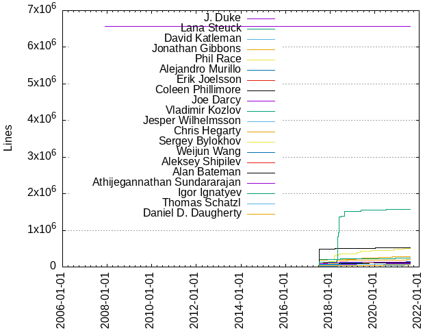

Authors
| Author | Commits (%) | + lines | - lines | First commit | Last commit | Age | Active days | # by commits |
|---|
| J. Duke | 3829 (5.83%) | 6572075 | 0 | 2007-12-01 | 2017-09-09 | 3570 days, 13:36:53 | 6 | 1 |
| Lana Steuck | 3635 (5.54%) | 4771 | 3795 | 2008-04-11 | 2018-05-11 | 3682 days, 6:06:57 | 685 | 2 |
| David Katleman | 1487 (2.27%) | 3066 | 2557 | 2009-11-13 | 2015-09-03 | 2120 days, 22:49:13 | 243 | 3 |
| Jonathan Gibbons | 1151 (1.75%) | 282437 | 170898 | 2008-03-06 | 2021-08-06 | 4900 days, 4:47:23 | 728 | 4 |
| Phil Race | 1044 (1.59%) | 499732 | 291754 | 2008-03-07 | 2021-08-09 | 4902 days, 23:02:29 | 644 | 5 |
| Alejandro Murillo | 998 (1.52%) | 761 | 912 | 2011-08-27 | 2016-10-25 | 1886 days, 22:44:04 | 383 | 6 |
| Erik Joelsson | 905 (1.38%) | 115083 | 150095 | 2012-02-06 | 2021-07-14 | 3446 days, 5:46:35 | 538 | 7 |
| Coleen Phillimore | 895 (1.36%) | 119188 | 92984 | 2008-01-17 | 2021-08-03 | 4946 days, 20:42:08 | 660 | 8 |
| Joe Darcy | 892 (1.36%) | 102384 | 63000 | 2009-01-15 | 2021-08-09 | 4589 days, 19:10:05 | 667 | 9 |
| Vladimir Kozlov | 864 (1.32%) | 238032 | 520361 | 2008-02-13 | 2021-07-28 | 4914 days, 5:20:46 | 664 | 10 |
| Jesper Wilhelmsson | 839 (1.28%) | 83993 | 24425 | 2011-03-11 | 2021-08-06 | 3800 days, 10:46:26 | 520 | 11 |
| Chris Hegarty | 807 (1.23%) | 196561 | 74125 | 2008-03-04 | 2021-06-14 | 4849 days, 16:20:40 | 456 | 12 |
| Sergey Bylokhov | 784 (1.19%) | 140747 | 119192 | 2011-04-05 | 2021-08-04 | 3774 days, 5:54:07 | 584 | 13 |
| Weijun Wang | 779 (1.19%) | 144107 | 85870 | 2008-03-05 | 2021-08-04 | 4900 days, 12:45:02 | 603 | 14 |
| Aleksey Shipilev | 728 (1.11%) | 55603 | 20996 | 2012-09-19 | 2021-08-02 | 3238 days, 21:27:45 | 411 | 15 |
| Alan Bateman | 700 (1.07%) | 519510 | 136354 | 2008-03-11 | 2021-05-08 | 4805 days, 17:32:01 | 424 | 16 |
| Athijegannathan Sundararajan | 684 (1.04%) | 124218 | 790271 | 2010-09-02 | 2021-06-09 | 3932 days, 12:55:15 | 481 | 17 |
| Igor Ignatyev | 663 (1.01%) | 1574627 | 259319 | 2013-02-01 | 2021-08-10 | 3111 days, 19:20:46 | 368 | 18 |
| Thomas Schatzl | 655 (1.00%) | 53572 | 44170 | 2012-06-26 | 2021-07-23 | 3314 days, 12:55:57 | 359 | 19 |
| Daniel D. Daugherty | 630 (0.96%) | 55065 | 24778 | 2007-12-05 | 2021-08-06 | 4992 days, 22:18:54 | 423 | 20 |
These didn't make it to the top: Mandy Chung, Magnus Ihse Bursie, Maurizio Cimadamore, Claes Redestad, Stefan Karlsson, Kelly O'Hair, Jan Lahoda, Roland Westrelin, Zhengyu Gu, David Holmes, Brian Burkhalter, Xiomara Jayasena, Prasanta Sadhukhan, Christine Lu, Tom Rodriguez, Tobias Hartmann, Harold Seigel, Vicente Romero, Hannes Wallnöfer, Kim Barrett, Vladimir Ivanov, Sean Mullan, Tim Bell, Xueming Shen, Xue-Lei Andrew Fan, Igor Veresov, Ioi Lam, Kumar Srinivasan, Christian Thalinger, Per Lidén, Roger Riggs, Naoto Sato, Daniel Fuchs, Attila Szegedi, Joe Wang, Erik Trimble, Abhijit Saha, Thomas Stuefe, Staffan Larsen, Goetz Lindenmaier, Bengt Rutisson, Matthias Baesken, Roman Kennke, Paul Sandoz, Valerie Peng, Erik Helin, Dmitry Samersoff, Ivan Gerasimov, Doug Lea, Michael McMahon, Jon Masamitsu, Mikael Vidstedt, Robert Field, Calvin Cheung, Alexander Scherbatiy, Lance Andersen, Volker Simonis, Michael Wilkerson, Jaroslav Bachorik, Martin Buchholz, Christian Tornqvist, Iris Clark, Sergey Malenkov, Jiangli Zhou, Chris Plummer, Stuart Marks, Andrew Haley, Yasumasa Suenaga, Nils Eliasson, John Coomes, Antonios Printezis, Serguei Spitsyn, Martin Doerr, Erik Gahlin, Vinnie Ryan, Erik Österlund, Amy Lu, Mike Duigou, Yumin Qi, Petr Pchelko, Jie Fu, John R Rose, Jim Laskey, Dean Long, Semyon Sadetsky, Pavel Porvatov, Stefan Johansson, Robbin Ehn, David Dehaven, Michael Fang, John Cuthbertson, Andrew Brygin, Doug Simon, Bhavesh Patel, Markus Grönlund, Suchen Chien, Y. Srinivas Ramakrishna, Christoph Langer, Sean Coffey, Alex Menkov, Zoltan Majo, Mikael Gerdin, Hamlin Li, Andy Herrick, Pavel Rappo, Marcus Lagergren, Aleksei Efimov, Bob Vandette, Bradford Wetmore, Karen Kinnear, Dmitry Cherepanov, Mikhailo Seledtsov, Yuri Nesterenko, Srikanth Adayapalam, Anthony Petrov, Dmitrij Pochepko, Keith McGuigan, Anthony Scarpino, Henry Jen, Joseph Provino, Severin Gehwolf, Jean Christophe Beyler, Alexander Zuev, John Jiang, Gerard Ziemski, Alexander Zvegintsev, Alexander Stepanov, Yuka Kamiya, Brent Christian, Rajan Halade, Michael Haupt, Leonid Mesnik, Jayathirth D V, Albert Noll, Daniil Titov, Christian Hagedorn, Rickard Bäckman, Mark Sheppard, Patrick Concannon, James Laskey, Masayoshi Okutsu, Priya Lakshmi Muthuswamy, Rachel Protacio, Pankaj Bansal, Sangheon Kim, Rob McKenna, Marcus Larsson, Konstantin Shefov, Jennifer Godinez, Felix Yang, Andreas Lundblad, Yong Jeffrey Huang, Alexander Potochkin, Kirill Zhaldybin, Kevin Walls, Lois Foltan, Sonali Goel, Eric McCorkle, Gary Adams, Frederic Parain, Artem Smotrakov, Katja Kantserova, Joel Borggrén-Franck, Andrei Dmitriev, Shanliang Jiang, Max Ockner, Anton Tarasov, Poonam Bajaj, Ekaterina Pavlova, Andrew John Hughes, Bharadwaj Yadavalli, Nick Gasson, Jamil Nimeh, David Lindholm, Albert Mingkun Yang, Dmitry Markov, Vyom Tewari, Jason Uh, Alexandre Iline, Niclas Adlertz, Lutz Schmidt, Ed Nevill, Jamsheed Mohammed C M, Alexey Semenyuk, Peter Levart, Patric Hedlin, Eric Caspole, Boris Ulasevich, Alexey Ivanov, Morris Meyer, David Chase, Peter Zhelezniakov, Pavel Punegov, Patricio Chilano Mateo, Oleg Pekhovskiy, Miroslav Kos, Leo Korinth, Kurchi Subhra Hazra, Dan Xu, Rahul Raghavan, Liam Miller-Cushon, Jini George, Dmitry Fazunenko, Xin Liu, Vadim Pakhnushev, Paul Hohensee, Dmitry Dmitriev, Xiaobin Lu, Srinivas Dama, Per Liden, Eamonn McManus, Nishit Jain, Michail Chernov, Jatin Bhateja, George Triantafillou, Sibabrata Sahoo, Sharath Ballal, Guoxiong Li, Frank Yuan, Chuck Rasbold, Alexander Matveev, Julia Boes, Gary Benson, Sergei Kovalev, Richard Reingruber, Leonid Romanov, Jim Holmlund, Anton Litvinov, Rachna Goel, Igor Nekrestyanov, Adam Petcher, Andrey Nazarov, Andrew Dinn, Omair Majid, Dan Smith, Yi Yang, Ambarish Rapte, Tatiana Pivovarova, Rajeev Chamyal, Manajit Halder, Mark Reinhold, Denis Fokin, David Buck, Artem Ananiev, Gustavo Romero, Filipp Zhinkin, Robin Westberg, Nadeesh TV, Krishna Addepalli, Bill Pittore, Alexander Kouznetsov, Abdul Kolarkunnu, Vladimir Danushevsky, Sandhya Viswanathan, Qi Zuo, Mikhail Cherkasov, Jorn Vernee, John Paul Adrian Glaubitz, Jaikiran Pai, Brian Goetz, Ajit Ghaisas, Ralf Schmelter, Peter Brunet, Paul Govereau, Jeff Dinkins, Chris Yin, Andrey Petrusenko, Laurent Bourgès, Tristan Yan, Stephen Colebourne, Roberto Castañeda Lozano, Martin Balao, Li Jiang, Jim Gish, Fredrik Öhrström, Anton Nashatyrev, Vivek Deshpande, Tejpal Rebari, Pengfei Li, Changpeng Fang, Ao Qi, Tagir F. Valeev, Steve Drach, Shashidhara Veerabhadraiah, Ramanand Patil, Christoph Göttschkes, Bertrand Delsart, Roland Schatz, Man Cao, Jeremy Manson, Ichiroh Takiguchi, Andrei Eremeev, Jean-Christophe Collet, Hui Shi, Dmitry Chuyko, Prem Balakrishnan, John Rose, Ivan Walulya, Fernando Guallini, Amanda Jiang, Alexander Kulyakhtin, Alexander Harlap, Aleksei Voitylov, Tao Mao, Clemens Eisserer, Avik Niyogi, Xiaohong Gong, Ian Graves, Fei Yang, Derek White, Conor Cleary, Bernard Blaser, Andreas Eriksson, Amit Sapre, Alexey Utkin, John Zavgren, Arthur Eubanks, Anton Kozlov, Matherey Nunez, Lin Zang, Jean-Francois Denise, David Simms, Andrey Turbanov, Nils Loodin, Mikhail Lapshin, Mario Torre, Jonathan Lu, Harsha Wardhana B, Edvard Wendelin, Denghui Dong, Yang Zhang, Vladimir Kempik, Shinya Yoshida, Sergey Tsypanov, Ron Durbin, Rahul Yadav, Michael Berg, Charles Lee, Andrei Pangin, Vera Akulova, Mikael Auno, Leo Jiang, Johnny Chen, Hai-May Chao, Evgeny Nikitin, Dong Bo, Adam Sotona, Ujwal Vangapally, Pranav Bhat, Patrick Zhang, Oleg Sukhodolsky, Ningsheng Jian, Michihiro Horie, Krystal Mok, Andrey Zakharov, Alex Blewitt, Vikrant Agarwal, Vassili Igouchkine, Swamy Venkataramanappa, Shilpi Rastogi, Sean Chou, Neil Richards, Jia-Hong Chen, Gunter Haug, Florian Weimer, Christoph Dreis, Chihiro Ito, Alexandre Boulgakov, Wang Huang, Thomas Ng, Gerald Thornbrugh, Fredrik Arvidsson, Eric Wang, Dmitriy Ermashov, Christopher Gruszka, Bhanu Prakash Gopularam, Alexey Ushakov, Zaiyao Liu, Toshio Nakamura, Stuart Monteith, Sergey Lugovoy, Peter Allwin, Neil Toda, Krystal Mo, Evgeniya Stepanova, Dmitri Trembovetski, Axel Siebenborn, Alexandr Scherbatiy, Tomas Hurka, Svetlana Nikandrova, Shafi Ahmad, Sergey Kuksenko, Sebastian Sickelmann, Pavel Tisnovsky, Mattias Tobiasson, Mahmood Ali, Hao Sun, Gilles Duboscq, Eric Liu, Denis Lila, Darryl Mocek, Arno Zeller, Alan Burlison, Adam Farley, Pavel Chistyakov, Kishor Kharbas, Jim Graham, Gary Collins, Fairoz Matte, Cheleswer Sahu, Andreas Woess, Aditya Mandaleeka, Vladimir Yaroslavskiy, Tim Du, Sunita Koppar, Steven Loomis, Pooja Chopra, Koichi Sakata, James Melvin, Eric Mccorkle, Yiming Wang, Werner Dietl, Steve Sides, Steve Bohne, Staffan Friberg, Shrinivas Joshi, Ron Pressler, Rafael Winterhalter, Prahalad Kumar Narayanan, Philipp Kunz, Pete Brunet, Olivier Lagneau, Michal Vala, Lev Priima, Kiran Sidhartha Ravikumar, Jesse Glick, Evan Whelan, Dmitry Batrak, Deven You, Daniel Stewart, Dalibor Topic, Andrew Luo, Alexey Bakhtin, Zhongwei Yao, Yudi Zheng, Vladislav Karnaukhov, Vivek Theeyarath, Vipin Sharma, Ulf Zibis, Robert Ottenhag, Patrick Reinhart, Matthias Klose, Ludovic Henry, Joshua Zhu, Huaming Li, Hiroshi Yamauchi, Dongbo He, Boris Molodenkov, Andrew Leonard, Alexander Smundak, Tom Benson, Steve Groeger, Stanislav Smirnov, Simon Tooke, Sebastian Stenzel, Raffaello Giulietti, Mahendra Chhipa, Karl Helgason, Jan Civlin, Frank Ding, Dmeetry Degrave, Bernhard Urban-Forster, Alex Schenkman, Akhil Arora, Abjihit Roy, Yuji Kubota, Vivi An, Tom Deneau, Sergey Gabdurakhmanov, Roman Grigoriadi, Roberto Castaneda Lozano, Philippe Marschall, Otavio Goncalves de Santana, Muthusamy Chinnathambi, Mala Bankal, Luis Miguel Alventosa, Jungwoo Ha, Joshua Bloch, Fredrik Ohstrom, Evgeny Mandrikov, Carlos Lucasius, Brandon Passanisi, Andrew M Leonard, Alexander Alexeev, Yunda, Yoshito Umaoka, Vivek R Deshpande, Thejasvi Voniadka, Steven Sides, Stephen Flores, Stefan Sarne, Smita Kamath, Shravya Rukmannagari, Shobhit Gupta, Ron Shapiro, Renjith Alexander, Ragini Prasad, Prasadrao Koppula, Prahalad Narayanan, Parvathi Somashekar, Michael Ernst, Marcus G K Williams, Lillian Angel, Kevin Rushforth, Joel Borggren-Franck, Jerry Zhou, Jaroslav Tulach, Ivan Šipka, Igor Kushnirskiy, Florian Brunner, Dmitry Nadezhin, Denis Kononenko, Deepak Bhole, David Li, Dag Wanvik, Clive Verghese, Charlie Gracie, Andreas Rieber, Alexander Kulyakthin, Alan Hayward, Abhijit Roy, miao zheng, Ziyi Luo, Yuri Gaevsky, Vlaidmir Ivanov, Vladimir A Ivanov, Vaibhav Choudhary, Tagir Valeev, Steve Poole, Stefan Anzinger, Sreeprakash Sreedharan, Shi Jun Zhang, Sergey Ustimenko, Sergey Groznyh, Sergei Tsypanov, Roger Calnan, Rocky Sloan, Rickard Backman, Rahul Singh, Pushan Hinduja, Per Bothner, Otavio Santana, Naveen Kumar, Monica Beckwith, Miroslaw Niemiec, Milan Mimica, Michael Cui, Michael C Berg, Martin Walsh, Maksim Khramov, Lev Serebryakov, Kiran Ravikumar, Kelvin Nilsen, Jia Huang, Jeannette Hung, Jayashree Viswanathan, Jakub Vanek, Ivan P Krylov, Evgeny Astigeevich, Dora Zhou, Dmytro Sheyko, Dan Zhou, Damjan Jovanovic, Corey Ashford, Christos Zoulas, Christoph Goettschkes, Chris Dennis, Cesar, Carsten Varming, Brandon Mitchell, Anton Ivanov, Alex Henrie, Aleksej Efimov, Alan Snyder, Ahmed Khawaja, liach, Zhuo Wang, Ying Zhou, Xubo Zhang, William Kemper, Wang Xue, Wang Haomin, Vikram Aroskar, Tomasz Wojtowicz, Teng Lu, Sunny Chan, Srikalyan Chandrashekar, Shinya Ogino, Sha Jiang, Rohit Arul Raj, Robin Stevens, Raymond Gallardo, Ravi Reddy, Randy Crihfield, Ramkumar Sunderbabu, Rama Pulavarthi, Peter Jensen, Nikola Grcevski, Nhat Nguyen, Misha Bykov, Martin von Gagern, Martin Desruisseaux, Mark Wielaard, Marco Dinacci, Mani Sarkar, Kuai Wei, Jose Ricardo Ziviani, Jon VanAlten, Johannes Kuhn, Joakim Nordström, Jiri Vanek, Jiri Tusla, Jan Valenta, Jan Kalina, Jamsheed Mohammed, James Cheng, Huang Wang, Hiroshi H Horii, Hendrik Schreiber, Gustavo Serra Scalet, Gauri Patil, Fredrik Ohrstrom, Egor Ushakov, Dmitry Ginzburg, Diancui Zhou, Denis Konoplev, Denis Istomin, David M Lloyd, David Leopoldseder, David DeHaven, Dave Bristor, Dan Horak, Daisy Zhou, Christian Stein, Chris Phillips, Ben Walsh, Balchandra Vaidya, Artem Malinko, Anubhav Meena, Anisha Nagarajan, Andrey Petushkov, Andrej Golovnin, Andreas Sjoberg, Andreas Schoesser, Andreas Gabrielsson, Сергей Цыпанов, sunguoyun, skodanda, jasontatton-aws, casparcwang, bobpengxie, Yude Lin, Yong Zhou, Yaofei Song, Yang Yi, Xerxes Ranby, Vojin Jovanovic, Victor Dyakov, Vasanth Venkatachalam, Tony Scarpino, Timo Kinnunen, Thomas Wuerthinger, Taras Ledkov, Tao Ji, Sureshkumar Mahaliswamy, Steve Goldman, Stanimir Stamenkov, Srinivasan Raghavan, Shirish Kuncolienkar, Sergey Nazarkin, Sergei Ustimenko, Sergei Pikalev, Scott Kovatch, Scott Gibbons, Sandipan Razzaque, Rémi Forax, Robert Gibson, Richard Warburton, René Schünemann, Rene Schuenemann, Razvan Lupusoru, Razvan A Lupusoru, Raghu Nair, Quaffel, Prasannaa, Peter von der Ahe, Peter Januschke, Paul Klingaman, Pallavi Sonal, Osamu Sakamoto, Oleg Barbashov, Nikita Gubarkov, Nico Williams, Nancy Nigam, Michal Frajt, Michael Horowitz, Maxim Kartashev, Matthias Braun, Matthew Brandyberry, Mat Carter, Masanori Yano, Masaki Katakai, Martin Mraz, Leif Samuelsson, Lehua Ding, Kumar Abhishek, Konstantin Voloshin, Klara Ward, Kirk Shoop, Kevin Looney, Kazunori Ogata, K Suman Rajkumaar, Junyuan Zheng, Junji Wang, Josh Bloch, Josef Eisl, Jose Ziviani, John Tortugo, Johannes Scheerer, Jinke Fan, Jing Tian, Jie Kang, Jason Tatton (AWS), Ivan Sipka, Ingemar Aberg, Hao Tang, Guy Delamarter, Federico Tello Gentile, Eugene Drobitko, Erik Osterlund, Ekaterina Vergizova, Eirik Bjorsnos, Edward Nevill, Dmitry Zinkevich, Diego Belfer, Derek Thomson, Deepak Kejriwal, David MacDonald, David Lloyd, Daniel Smith, Danesh Dadachanji, Dan Lemmond, Christian Wimmer, Christian Haeubl, Chris Bensen, Brad Corso, Bhaktavatsal R Maram, Bernd Eckenfels, Benoit Daloze, Ashok Srinivasa Murthy, Artem Kosarev, Archana Nogriya, Anton Melnikov, Anirvan Sarkar, Amit Pawar, Alok Kumar Sharma, Alexander Vorobyev, Alex Kashchenko, Albert Yang, Alan Malloy, Alan Eliasen, Ahmed Ashour, wattsun, prajwal_kumaraswamy, jiefu, horizonzy, hltj, djelinski, buddyliao, amresh-sahu, ZhengJun Li, Zdenek Zambersky, Yue Liu, Yu Zhang, Yu Li, Your Name, Yoshiki Sato, Yingqi Lu, Xuelei Fan, Xiaowei Lu, Xiang Yuan, William Harnois, Wang Zhuo, Walter Florian Gugenberger, Vyom Tiwari, Vsevolod Tolstopyatov, Vladislav Volodin, Vladimir Kvashin, Vladimir Kravets, Vlad Ureche, Vipin Menon, Vipin M V, Viktor Dukhovni, Vic Wang, UncleNine, Trevor Watson, Tony Printezis, Tomas Zezula, Tom Ball, Tobias Wagner, Timothy Buktu, Time Du, Tim Buktu, Tiantian Du, Tianmin Shi, Thomas Stufe, Thomas Salter, TatWai Chong, Sylvestre Ledru, Swati Sharma, Sundararajan Athijegannathan, Sue Wei, Stuart Douglas, Stewart X Addison, Steven Lawrance, Stephane Epardaud, Steffen Schreiber, Stanislav Baiduzhyi, Srividya Shamaiah, Simon Legner, Shivangi Gupta, Shaun Spiller, Sergey Platonov, Sergey Chernyshev, Sean Zhou, Scott Blum, ScientificWare, Saravana Kumar Vijayasekaran, Sandeep Konchady, Rohit Agrawal, Robert Strout II, Remi Forax, Regev Shemy, Red Hat, Ray Alex, Raoul-Gabriel Urma, Rajat Mahajan, Rahul Kandu, Rado Smogura, Qi Feng, Priyanka Mangal, Priya Muthuswamy, Prajwal Kumaraswamy, Petr Hejl, Peter Tribble, Peter Runge, Peter B. Kessler, Peng Li, Pavel Stepanov, Pavel Reppo, Paul Rank, Paul Nauman, Pasi Eronen, Otavio Goncalves, Oliver Bendig, Olga Mikhaltsova, Oleg Pliss, Oleg Mazurov, Ogata Kazunori, Nikolay Martynov, Nikolay Gorshkov, Nicolas Carranza, Nicholas Cull, Neo Jia, Nelson Dcosta, Nasser Ebrahim, Nakul Natu, Muneer Kolarkunnu, Morvan Le Mescam, Mohamed Naufal, Mitsuru Kariya, Mikhail Filippov, Mike Skells, Michel Trudeau, Michael Zucchi, Michael Skells, Michael Edgar, Michael Duigou, Michael Dardis, Michael D, Michael Bien, Michael Bailey, Maynard Johnson, Max-Kanat Alexander, Matthias Perktold, Matthias Neugschwandtner, Matthew Smith, Matthew Flaschen, Matt Smith, Masato Yoshida, Markus Persson, Markus Knetschke, Markus Gronlund, Mark Mahieu, Marius Volkhart, Marc Hoffmann, Man Lung Wong, Mallikarjuna Avaluri, Magnuse Ihse Bursie, Lun Liu, Lukas Stadler, Lucy Lu, Louis Wasserman, Long Chen, Liu Xin, Letu Yang, Laurent Bourges, Kurt Miller, Kun Wang, Konstantin Perikov, Knut Anders Hatlen, Kirill Shirokov, Kirill Kirichenko, Kevin Brown, Kevin Bourrillion, Ken Dobson, Keith Randall, Kavitha Natarajan, Kaushik Srenevasan, Kartik Ohri, Karl von Randow, KUBOTA Yuji, Joshua Maurice, Josef Haider, Jose Luis Martin, Jonathan Klabunde Tomer, Jonathan Dowland, Jonathan Bluett-Duncan, Jonas Oreland, John Neffenger, John Lin, Joel Pelaez Jorge, Joe Bowbeer, Jing LV, Jie He, Jessica Man, Jesse Wilson, Jesper Steen Møller, Jeremy Kuhn, Jen Dority, Jeff Nisewanger, Jeff Hain, Jayashree Sk1, Jayashree S Kumar, Jason Zaugg, Jason Yong, Jason T Greene, Jaroslav Kamenik, James Tomson, James Fuller, Jagjot Singh, Jacob T Royal, Jack Hartstein, JSNORDST, Ivan Krylov, Ivan Galkin, Ingemar Åberg, Igor Nunes, Igor Henrique Soares Nunes, Igor Chernyshev, Ignasi Marimon-Clos, Iaroslav Savytskyi, Hong Shao Yang, Hollow Man, Hiroshi Ito, Henri Tremblay, Haoyu Li, Hal Mo, Gil Tene, George Adams, Ge Guo, Gavin Bierman, Galder Zamarreño, Galder Zamarreno, Gabriel Reid, Fu Jie, Francis Andre, Florian Bruckner, Fleshgrinder, Fedor Burdun, Eric Bruneton, Emmanuel Bourg, Elliott Baron, Eirik Bjørsnøs, EC2 Default User, Douglas Felt, Dong Wangya, Dipak Kumar, Dinesh Malav, Dimitar Mavrodiev, Deepak kejriwal, Davin Kevin, Davide Angelocola, David Schlosnagle, David M. Lloyd, David Kocher, David Griffiths, David Carlier, Dave Pointon, Dave Dice, Daniel Martin, Daniel Le Duc Khoi Nguyen, Daniel Kamil Kozar, Daniel Aioanei, Dan Munckton, Dan Lutker, Craig Andrews, Costantino Cerbo, Christophe Phillips, Christine Flood, Christian Schulte, Charlie Jiang, Charles Munger, Cesar Soares Lucas, Carter Kozak, Carl Quinn, Bruce Chapman, Brian Toal, Brian Gardner, Brian Doherty, Bo Zhang, Bin Liao, Bill Shannon, Bhawesh Choudhary, Bharadwaj Yadavelli, Bernhard Urban, Ben Evans, Behdad Esfahbod, Based on an idea by Ulf Zibis, Aya Ebata, Artem Semenov, Anuraag Agrawal, Anthony Juckel, Andrii Rodionov, Andrey Vershinin, Andrey Dyachkov, Andrew Wong, Andrew Hughes, Andreas Kohn, Andreas Frischknecth, Amy Wang, Amresh Sahu, Amith Pawar, Almaz Mingaleev, Alkesey Timofeev, Alexey Ragozin, Alexander Shusherov, Alexander Popov, Alexander Fomin, Alex Kasko, Alex Buckley, Aleksey Ignatenko, Aleandr Miloslavskiy, Aggelos Biboudis, Adam Farley8, Abossolo Foh Guy, ANUPAM DEV
Only top 20 authors shown
Only top 20 authors shown
| Month | Author | Commits (%) | Next top 5 | Number of authors |
|---|
| 2021-08 | Igor Ignatyev | 22 (20.00% of 110) | Daniel D. Daugherty, Sergey Tsypanov, Jesper Wilhelmsson, Claes Redestad, Albert Mingkun Yang | 51 |
| 2021-07 | Jesper Wilhelmsson | 24 (6.50% of 369) | Igor Ignatyev, Thomas Schatzl, Jan Lahoda, David Holmes, Daniel D. Daugherty | 117 |
| 2021-06 | Igor Ignatyev | 29 (5.94% of 488) | Daniel D. Daugherty, Thomas Schatzl, Jonathan Gibbons, David Holmes, Jan Lahoda | 128 |
| 2021-05 | Hannes Wallnöfer | 14 (3.47% of 403) | Jie Fu, Thomas Stuefe, Claes Redestad, Albert Mingkun Yang, Guoxiong Li | 135 |
| 2021-04 | Igor Ignatyev | 25 (5.06% of 494) | Daniel D. Daugherty, Prasanta Sadhukhan, Jie Fu, Mikael Vidstedt, Ioi Lam | 140 |
| 2021-03 | Aleksey Shipilev | 21 (4.35% of 483) | Jie Fu, Alex Blewitt, Coleen Phillimore, Zhengyu Gu, Jonathan Gibbons | 142 |
| 2021-02 | Aleksey Shipilev | 18 (4.85% of 371) | Jonathan Gibbons, Thomas Stuefe, Ioi Lam, Daniel D. Daugherty, Chris Plummer | 120 |
| 2021-01 | Aleksey Shipilev | 34 (7.56% of 450) | Sergey Bylokhov, Kim Barrett, Daniel D. Daugherty, Zhengyu Gu, Jonathan Gibbons | 129 |
| 2020-12 | Vladimir Ivanov | 12 (3.00% of 400) | Xue-Lei Andrew Fan, Jie Fu, Ioi Lam, Magnus Ihse Bursie, Coleen Phillimore | 129 |
| 2020-11 | Aleksey Shipilev | 45 (9.47% of 475) | Claes Redestad, Sergey Bylokhov, Roman Kennke, Per Liden, Magnus Ihse Bursie | 131 |
| 2020-10 | Aleksey Shipilev | 42 (9.05% of 464) | Sergey Bylokhov, Prasanta Sadhukhan, Claes Redestad, Thomas Schatzl, Igor Ignatyev | 117 |
| 2020-09 | Aleksey Shipilev | 29 (8.26% of 351) | Igor Ignatyev, Ioi Lam, Stefan Karlsson, Kim Barrett, Sergey Bylokhov | 121 |
| 2020-08 | Prasanta Sadhukhan | 22 (6.41% of 343) | Stefan Karlsson, Igor Ignatyev, Mikael Vidstedt, Coleen Phillimore, Sergey Bylokhov | 116 |
| 2020-07 | Igor Ignatyev | 28 (7.37% of 380) | Joe Darcy, Mikael Vidstedt, Jesper Wilhelmsson, Coleen Phillimore, Prasanta Sadhukhan | 118 |
| 2020-06 | Jonathan Gibbons | 24 (4.96% of 484) | Jesper Wilhelmsson, Stefan Karlsson, Daniel D. Daugherty, Aleksey Shipilev, Alexey Semenyuk | 124 |
| 2020-05 | Aleksey Shipilev | 32 (7.48% of 428) | Magnus Ihse Bursie, Claes Redestad, Prasanta Sadhukhan, Zhengyu Gu, Igor Ignatyev | 109 |
| 2020-04 | Aleksey Shipilev | 41 (8.76% of 468) | Igor Ignatyev, Chris Plummer, Magnus Ihse Bursie, Sergey Bylokhov, Zhengyu Gu | 127 |
| 2020-03 | Aleksey Shipilev | 31 (7.62% of 407) | Jonathan Gibbons, Claes Redestad, Sergey Bylokhov, Stefan Karlsson, Roland Westrelin | 131 |
| 2020-02 | Aleksey Shipilev | 15 (4.60% of 326) | Magnus Ihse Bursie, Matthias Baesken, Erik Gahlin, Sergey Bylokhov, Jonathan Gibbons | 111 |
| 2020-01 | Jesper Wilhelmsson | 24 (6.90% of 348) | Erik Gahlin, Zhengyu Gu, Vicente Romero, Per Lidén, Brian Burkhalter | 110 |
| 2019-12 | Sergey Bylokhov | 15 (3.83% of 392) | Thomas Schatzl, Jesper Wilhelmsson, Jonathan Gibbons, Prasanta Sadhukhan, Weijun Wang | 116 |
| 2019-11 | Prasanta Sadhukhan | 15 (3.97% of 378) | Thomas Schatzl, Stefan Karlsson, Matthias Baesken, Jie Fu, Per Lidén | 119 |
| 2019-10 | Aleksey Shipilev | 26 (7.78% of 334) | Per Lidén, Claes Redestad, Joe Darcy, Zhengyu Gu, Sergey Bylokhov | 107 |
| 2019-09 | Matthias Baesken | 15 (5.03% of 298) | Aleksey Shipilev, Per Lidén, Joe Darcy, Stefan Karlsson, David Holmes | 90 |
| 2019-08 | Aleksey Shipilev | 14 (5.02% of 279) | Tobias Hartmann, Per Lidén, Kim Barrett, Matthias Baesken, Leo Korinth | 100 |
| 2019-07 | Matthias Baesken | 22 (6.69% of 329) | Mikael Vidstedt, Weijun Wang, Roman Kennke, Brian Burkhalter, Kim Barrett | 93 |
| 2019-06 | Jonathan Gibbons | 17 (4.38% of 388) | Jesper Wilhelmsson, Zhengyu Gu, Joe Darcy, Aleksey Shipilev, Igor Ignatyev | 112 |
| 2019-05 | Aleksey Shipilev | 21 (4.27% of 492) | Coleen Phillimore, Zhengyu Gu, Phil Race, Stefan Karlsson, Arthur Eubanks | 121 |
| 2019-04 | Aleksey Shipilev | 16 (5.00% of 320) | Prasanta Sadhukhan, Claes Redestad, Sergey Bylokhov, Coleen Phillimore, Stefan Karlsson | 99 |
| 2019-03 | Per Lidén | 30 (7.52% of 399) | Claes Redestad, Aleksey Shipilev, Chris Hegarty, Jesper Wilhelmsson, Gary Adams | 109 |
| 2019-02 | Stefan Karlsson | 19 (5.25% of 362) | Igor Ignatyev, Vladimir Ivanov, Jesper Wilhelmsson, Claes Redestad, Prasanta Sadhukhan | 106 |
| 2019-01 | Jesper Wilhelmsson | 29 (6.24% of 465) | Claes Redestad, Aleksey Shipilev, Per Lidén, Zhengyu Gu, Igor Ignatyev | 123 |
| 2018-12 | Erik Gahlin | 13 (3.83% of 339) | Per Lidén, Erik Österlund, Magnus Ihse Bursie, Thomas Schatzl, Prasanta Sadhukhan | 127 |
| 2018-11 | Roland Westrelin | 14 (3.34% of 419) | Erik Österlund, Roman Kennke, Prasanta Sadhukhan, Sergey Bylokhov, Robbin Ehn | 131 |
| 2018-10 | Jean Christophe Beyler | 18 (4.60% of 391) | Roman Kennke, Thomas Schatzl, Prasanta Sadhukhan, Harold Seigel, Aleksey Shipilev | 125 |
| 2018-09 | Magnus Ihse Bursie | 25 (7.14% of 350) | Phil Race, Jean Christophe Beyler, Coleen Phillimore, Per Lidén, Mikael Vidstedt | 114 |
| 2018-08 | Coleen Phillimore | 17 (4.82% of 353) | Igor Ignatyev, Thomas Schatzl, Kim Barrett, Ioi Lam, Per Lidén | 114 |
| 2018-07 | Joe Darcy | 17 (4.68% of 363) | Jean Christophe Beyler, Phil Race, Daniel D. Daugherty, Coleen Phillimore, Jesper Wilhelmsson | 112 |
| 2018-06 | Phil Race | 29 (5.11% of 568) | Per Lidén, Igor Ignatyev, Stefan Karlsson, Sergey Bylokhov, Jan Lahoda | 149 |
| 2018-05 | Phil Race | 20 (4.95% of 404) | Stefan Karlsson, Thomas Schatzl, Erik Joelsson, Igor Ignatyev, Aleksey Shipilev | 128 |
| 2018-04 | Thomas Schatzl | 18 (5.04% of 357) | Stefan Karlsson, Magnus Ihse Bursie, Claes Redestad, Per Lidén, Phil Race | 121 |
| 2018-03 | Phil Race | 28 (6.18% of 453) | Magnus Ihse Bursie, Coleen Phillimore, Thomas Schatzl, Erik Joelsson, Thomas Stuefe | 122 |
| 2018-02 | Jesper Wilhelmsson | 14 (3.77% of 371) | Erik Joelsson, Phil Race, Lois Foltan, Lana Steuck, Coleen Phillimore | 111 |
| 2018-01 | Jonathan Gibbons | 14 (4.88% of 287) | Lana Steuck, Erik Österlund, Phil Race, Goetz Lindenmaier, Coleen Phillimore | 106 |
| 2017-12 | Phil Race | 15 (4.36% of 344) | Magnus Ihse Bursie, Paul Sandoz, Lana Steuck, Jesper Wilhelmsson, David Holmes | 107 |
| 2017-11 | Phil Race | 17 (3.94% of 432) | Magnus Ihse Bursie, Jesper Wilhelmsson, Coleen Phillimore, Thomas Schatzl, Jonathan Gibbons | 123 |
| 2017-10 | Erik Joelsson | 14 (4.52% of 310) | Magnus Ihse Bursie, Doug Lea, Phil Race, Jesper Wilhelmsson, Serguei Spitsyn | 99 |
| 2017-09 | J. Duke | 18 (8.29% of 217) | Magnus Ihse Bursie, Abhijit Saha, Athijegannathan Sundararajan, Erik Joelsson, Weijun Wang | 75 |
| 2017-08 | J. Duke | 135 (23.68% of 570) | Jesper Wilhelmsson, Abhijit Saha, Phil Race, Igor Ignatyev, Coleen Phillimore | 110 |
| 2017-07 | J. Duke | 3668 (91.09% of 4027) | Lana Steuck, Jonathan Gibbons, Thomas Schatzl, Phil Race, Harold Seigel | 92 |
| 2017-06 | Lana Steuck | 121 (25.00% of 484) | Mandy Chung, Igor Ignatyev, Bob Vandette, Amy Lu, Thomas Schatzl | 108 |
| 2017-05 | Lana Steuck | 144 (28.46% of 506) | Igor Ignatyev, Magnus Ihse Bursie, Jesper Wilhelmsson, Phil Race, Mandy Chung | 101 |
| 2017-04 | Lana Steuck | 108 (23.58% of 458) | Jesper Wilhelmsson, Igor Ignatyev, Jonathan Gibbons, Phil Race, Magnus Ihse Bursie | 84 |
| 2017-03 | Lana Steuck | 88 (18.76% of 469) | Jesper Wilhelmsson, Phil Race, Jonathan Gibbons, Brian Burkhalter, Sergey Bylokhov | 96 |
| 2017-02 | Lana Steuck | 74 (14.15% of 523) | Jesper Wilhelmsson, Joe Darcy, Phil Race, Bob Vandette, Robert Field | 129 |
| 2017-01 | Lana Steuck | 56 (12.23% of 458) | Jan Lahoda, Iris Clark, Jesper Wilhelmsson, Phil Race, Robert Field | 112 |
| 2016-12 | Lana Steuck | 59 (10.99% of 537) | Jesper Wilhelmsson, Alan Bateman, Erik Joelsson, Mandy Chung, Hamlin Li | 126 |
| 2016-11 | Lana Steuck | 58 (12.42% of 467) | Phil Race, Magnus Ihse Bursie, Erik Joelsson, Mandy Chung, Robert Field | 129 |
| 2016-10 | Lana Steuck | 54 (10.36% of 521) | Phil Race, Erik Joelsson, Alejandro Murillo, Sean Mullan, Roger Riggs | 140 |
| 2016-09 | Lana Steuck | 65 (12.33% of 527) | Alejandro Murillo, Kirill Zhaldybin, Athijegannathan Sundararajan, Sergei Kovalev, Dean Long | 143 |
| 2016-08 | Alejandro Murillo | 48 (7.57% of 634) | Lana Steuck, Claes Redestad, Phil Race, Igor Veresov, Brian Burkhalter | 143 |
| 2016-07 | Alejandro Murillo | 117 (18.99% of 616) | Phil Race, Semyon Sadetsky, Daniel D. Daugherty, Brian Burkhalter, Zoltan Majo | 152 |
| 2016-06 | Lana Steuck | 58 (9.48% of 612) | Alejandro Murillo, David Dehaven, Joe Darcy, Weijun Wang, Erik Joelsson | 154 |
| 2016-05 | Lana Steuck | 58 (6.87% of 844) | Vladimir Ivanov, Alan Bateman, Alejandro Murillo, Athijegannathan Sundararajan, Mandy Chung | 172 |
| 2016-04 | Lana Steuck | 53 (6.67% of 795) | Alejandro Murillo, Erik Joelsson, Stefan Karlsson, Chris Hegarty, Daniel D. Daugherty | 168 |
| 2016-03 | Lana Steuck | 63 (8.17% of 771) | Chris Hegarty, Bengt Rutisson, Zoltan Majo, Alejandro Murillo, Mandy Chung | 161 |
| 2016-02 | Lana Steuck | 58 (10.38% of 559) | Aleksey Shipilev, Bengt Rutisson, Tobias Hartmann, Alejandro Murillo, Vladimir Ivanov | 136 |
| 2016-01 | Lana Steuck | 56 (9.66% of 580) | Tobias Hartmann, Alejandro Murillo, Chris Hegarty, Joseph Provino, Coleen Phillimore | 139 |
| 2015-12 | Lana Steuck | 76 (12.16% of 625) | Phil Race, Christian Thalinger, Athijegannathan Sundararajan, Alejandro Murillo, Chris Hegarty | 143 |
| 2015-11 | Lana Steuck | 70 (10.20% of 686) | Iris Clark, Alejandro Murillo, Erik Joelsson, Coleen Phillimore, Erik Helin | 141 |
| 2015-10 | Lana Steuck | 95 (15.70% of 605) | Alejandro Murillo, Attila Szegedi, Erik Helin, Coleen Phillimore, Jesper Wilhelmsson | 132 |
| 2015-09 | Lana Steuck | 48 (10.48% of 458) | Iris Clark, Athijegannathan Sundararajan, Alejandro Murillo, Magnus Ihse Bursie, Phil Race | 127 |
| 2015-08 | David Katleman | 32 (7.84% of 408) | Iris Clark, Athijegannathan Sundararajan, Lana Steuck, Thomas Schatzl, Alejandro Murillo | 101 |
| 2015-07 | David Katleman | 40 (8.25% of 485) | Lana Steuck, Iris Clark, Alejandro Murillo, Daniel D. Daugherty, Sergey Bylokhov | 118 |
| 2015-06 | Lana Steuck | 45 (8.27% of 544) | Alejandro Murillo, Vladimir Kozlov, David Katleman, Phil Race, Joe Darcy | 125 |
| 2015-05 | David Katleman | 32 (6.15% of 520) | Lana Steuck, Alejandro Murillo, Sergey Bylokhov, Stefan Karlsson, Katja Kantserova | 116 |
| 2015-04 | David Katleman | 48 (8.48% of 566) | Lana Steuck, Joe Darcy, Phil Race, Jaroslav Bachorik, Christian Tornqvist | 126 |
| 2015-03 | David Katleman | 32 (6.14% of 521) | Alejandro Murillo, Phil Race, Lana Steuck, Magnus Ihse Bursie, Jesper Wilhelmsson | 127 |
| 2015-02 | David Katleman | 32 (8.14% of 393) | Lana Steuck, Paul Sandoz, Alejandro Murillo, Mandy Chung, Erik Joelsson | 110 |
| 2015-01 | David Katleman | 32 (7.00% of 457) | Lana Steuck, Alejandro Murillo, Erik Joelsson, Sergey Bylokhov, Dean Long | 108 |
| 2014-12 | Lana Steuck | 33 (7.25% of 455) | David Katleman, Chris Hegarty, Jesper Wilhelmsson, Alejandro Murillo, Igor Ignatyev | 110 |
| 2014-11 | David Katleman | 24 (5.85% of 410) | Lana Steuck, Jesper Wilhelmsson, Coleen Phillimore, Alejandro Murillo, Marcus Lagergren | 124 |
| 2014-10 | Lana Steuck | 38 (8.68% of 438) | David Katleman, Tobias Hartmann, Jesper Wilhelmsson, Igor Veresov, Attila Szegedi | 124 |
| 2014-09 | David Katleman | 32 (6.37% of 502) | Lana Steuck, Phil Race, John Rose, Staffan Larsen, Jesper Wilhelmsson | 130 |
| 2014-08 | Lana Steuck | 48 (9.50% of 505) | Chris Hegarty, Athijegannathan Sundararajan, Jon Masamitsu, Zhengyu Gu, David Katleman | 112 |
| 2014-07 | Lana Steuck | 42 (8.88% of 473) | David Katleman, Joe Darcy, Alejandro Murillo, Phil Race, Weijun Wang | 118 |
| 2014-06 | David Katleman | 40 (8.13% of 492) | Lana Steuck, Attila Szegedi, Athijegannathan Sundararajan, Joe Darcy, Henry Jen | 119 |
| 2014-05 | David Katleman | 40 (8.62% of 464) | Lana Steuck, Phil Race, Christian Thalinger, Ivan Gerasimov, Attila Szegedi | 131 |
| 2014-04 | Lana Steuck | 37 (7.43% of 498) | David Katleman, Petr Pchelko, Staffan Larsen, Marcus Lagergren, Weijun Wang | 125 |
| 2014-03 | Lana Steuck | 29 (5.94% of 488) | David Katleman, Sergey Bylokhov, Petr Pchelko, Erik Helin, Erik Joelsson | 115 |
| 2014-02 | Lana Steuck | 25 (5.94% of 421) | David Katleman, Alan Bateman, Phil Race, Erik Joelsson, Petr Pchelko | 113 |
| 2014-01 | Joe Darcy | 32 (7.16% of 447) | Abhijit Saha, Vladimir Kozlov, Jeff Dinkins, Athijegannathan Sundararajan, Lana Steuck | 126 |
| 2013-12 | Lana Steuck | 21 (6.56% of 320) | David Katleman, Iris Clark, Petr Pchelko, Joe Darcy, Athijegannathan Sundararajan | 106 |
| 2013-11 | Christine Lu | 35 (8.64% of 405) | Lana Steuck, Alejandro Murillo, Goetz Lindenmaier, Athijegannathan Sundararajan, Alan Bateman | 116 |
| 2013-10 | Lana Steuck | 60 (6.23% of 963) | Christine Lu, Chris Hegarty, David Katleman, Athijegannathan Sundararajan, Erik Joelsson | 154 |
| 2013-09 | Christine Lu | 32 (5.33% of 600) | Lana Steuck, Athijegannathan Sundararajan, Thomas Schatzl, Niclas Adlertz, Vicente Romero | 140 |
| 2013-08 | Lana Steuck | 49 (7.48% of 655) | Christine Lu, Chris Hegarty, Athijegannathan Sundararajan, Jonathan Gibbons, Alejandro Murillo | 135 |
| 2013-07 | Athijegannathan Sundararajan | 42 (7.66% of 548) | Lana Steuck, Christine Lu, Maurizio Cimadamore, David Katleman, Attila Szegedi | 120 |
| 2013-06 | Lana Steuck | 47 (8.23% of 571) | David Katleman, Chris Hegarty, Athijegannathan Sundararajan, Erik Joelsson, Vicente Romero | 124 |
| 2013-05 | David Katleman | 52 (7.83% of 664) | Lana Steuck, Chris Hegarty, Jonathan Gibbons, Erik Joelsson, Attila Szegedi | 134 |
| 2013-04 | Lana Steuck | 58 (9.68% of 599) | David Katleman, Chris Hegarty, Athijegannathan Sundararajan, Jim Laskey, Mike Duigou | 122 |
| 2013-03 | David Katleman | 36 (7.41% of 486) | Lana Steuck, Morris Meyer, Maurizio Cimadamore, Athijegannathan Sundararajan, Alejandro Murillo | 117 |
| 2013-02 | David Katleman | 44 (7.48% of 588) | Lana Steuck, Athijegannathan Sundararajan, James Laskey, Maurizio Cimadamore, Erik Joelsson | 125 |
| 2013-01 | David Katleman | 44 (8.84% of 498) | Erik Joelsson, Lana Steuck, Athijegannathan Sundararajan, Jonathan Gibbons, Maurizio Cimadamore | 115 |
| 2012-12 | David Katleman | 44 (14.33% of 307) | Lana Steuck, Erik Joelsson, Alejandro Murillo, Jonathan Gibbons, Sean Mullan | 90 |
| 2012-11 | David Katleman | 41 (12.65% of 324) | Erik Joelsson, Jonathan Gibbons, Lana Steuck, Zhengyu Gu, Alejandro Murillo | 93 |
| 2012-10 | Lana Steuck | 35 (10.87% of 322) | David Katleman, Jonathan Gibbons, Alejandro Murillo, Vladimir Kozlov, Alan Bateman | 87 |
| 2012-09 | David Katleman | 36 (12.63% of 285) | Lana Steuck, Kelly O'Hair, John Coomes, Vladimir Kozlov, Alejandro Murillo | 81 |
| 2012-08 | David Katleman | 37 (15.61% of 237) | Lana Steuck, Christian Thalinger, Alejandro Murillo, Sean Mullan, Vladimir Kozlov | 77 |
| 2012-07 | Lana Steuck | 25 (12.82% of 195) | David Katleman, Christine Lu, Alejandro Murillo, Zhengyu Gu, Vladimir Kozlov | 61 |
| 2012-06 | Lana Steuck | 31 (11.36% of 273) | David Katleman, Christine Lu, Staffan Larsen, Alejandro Murillo, Vladimir Kozlov | 77 |
| 2012-05 | David Katleman | 36 (13.90% of 259) | Lana Steuck, Alejandro Murillo, Abhijit Saha, Daniel D. Daugherty, Anton Tarasov | 74 |
| 2012-04 | David Katleman | 35 (16.20% of 216) | Lana Steuck, Daniel D. Daugherty, Anthony Petrov, Staffan Larsen, Sergey Bylokhov | 71 |
| 2012-03 | David Katleman | 35 (12.96% of 270) | Lana Steuck, Maurizio Cimadamore, Alejandro Murillo, Michael Fang, John Coomes | 74 |
| 2012-02 | Lana Steuck | 36 (12.86% of 280) | David Katleman, Alejandro Murillo, Abhijit Saha, Frederic Parain, Vladimir Kozlov | 71 |
| 2012-01 | David Katleman | 31 (11.92% of 260) | Lana Steuck, Vladimir Kozlov, Alejandro Murillo, Bengt Rutisson, John R Rose | 71 |
| 2011-12 | David Katleman | 40 (17.86% of 224) | Lana Steuck, Vladimir Kozlov, Kelly O'Hair, Jonathan Gibbons, Christine Lu | 65 |
| 2011-11 | Lana Steuck | 25 (11.79% of 212) | David Katleman, Christian Thalinger, Alexandr Scherbatiy, Vladimir Kozlov, Gary Adams | 65 |
| 2011-10 | David Katleman | 28 (15.56% of 180) | Lana Steuck, John Coomes, Sean Mullan, Chris Hegarty, Antonios Printezis | 47 |
| 2011-09 | Suchen Chien | 22 (9.32% of 236) | Lana Steuck, David Katleman, Tom Rodriguez, Weijun Wang, Jonathan Gibbons | 56 |
| 2011-08 | Vladimir Kozlov | 12 (7.41% of 162) | Lana Steuck, Weijun Wang, Joe Darcy, Suchen Chien, Christine Lu | 57 |
| 2011-07 | Kelly O'Hair | 9 (7.03% of 128) | John Coomes, Alexandre Boulgakov, Abhijit Saha, Vladimir Kozlov, Tom Rodriguez | 37 |
| 2011-06 | Suchen Chien | 38 (18.10% of 210) | Lana Steuck, Abhijit Saha, John R Rose, Joe Darcy, Tom Rodriguez | 44 |
| 2011-05 | Suchen Chien | 36 (10.75% of 335) | Tom Rodriguez, Michael Fang, Lana Steuck, Abhijit Saha, Vladimir Kozlov | 70 |
| 2011-04 | Michael Fang | 31 (6.29% of 493) | Lana Steuck, Kelly O'Hair, Suchen Chien, Tom Rodriguez, Erik Trimble | 84 |
| 2011-03 | Kelly O'Hair | 28 (6.35% of 441) | Lana Steuck, Alexander Kouznetsov, Jonathan Gibbons, Tom Rodriguez, Suchen Chien | 86 |
| 2011-02 | Christine Lu | 35 (9.56% of 366) | Kelly O'Hair, Lana Steuck, Maurizio Cimadamore, Alan Bateman, Vladimir Kozlov | 75 |
| 2011-01 | Lana Steuck | 32 (11.15% of 287) | Christine Lu, Kelly O'Hair, Phil Race, Maurizio Cimadamore, Jonathan Gibbons | 47 |
| 2010-12 | Kelly O'Hair | 47 (11.46% of 410) | Lana Steuck, Christine Lu, Michael Fang, Maurizio Cimadamore, Masayoshi Okutsu | 75 |
| 2010-11 | Lana Steuck | 31 (11.83% of 262) | Christine Lu, Maurizio Cimadamore, Alan Bateman, Erik Trimble, Xueming Shen | 62 |
| 2010-10 | Christine Lu | 35 (12.07% of 290) | Lana Steuck, Alan Bateman, Jonathan Gibbons, Tom Rodriguez, Chris Hegarty | 58 |
| 2010-09 | Christine Lu | 38 (12.67% of 300) | Lana Steuck, Kelly O'Hair, Lance Andersen, Jonathan Gibbons, Tom Rodriguez | 56 |
| 2010-08 | Christine Lu | 30 (14.78% of 203) | Lana Steuck, Jonathan Gibbons, Antonios Printezis, Erik Trimble, Tom Rodriguez | 45 |
| 2010-07 | Michael Wilkerson | 24 (12.12% of 198) | Lana Steuck, Jonathan Gibbons, Tom Rodriguez, Erik Trimble, Ulf Zibis | 52 |
| 2010-06 | Michael Wilkerson | 36 (14.01% of 257) | Lana Steuck, Alan Bateman, Kelly O'Hair, Mandy Chung, Jonathan Gibbons | 46 |
| 2010-05 | Michael Wilkerson | 36 (16.29% of 221) | Lana Steuck, Kelly O'Hair, John R Rose, Erik Trimble, Xueming Shen | 38 |
| 2010-04 | Michael Wilkerson | 32 (19.51% of 164) | Lana Steuck, Erik Trimble, Antonios Printezis, Vladimir Kozlov, Weijun Wang | 43 |
| 2010-03 | Michael Wilkerson | 21 (13.29% of 158) | Lana Steuck, Jonathan Gibbons, Kelly O'Hair, Chris Hegarty, Weijun Wang | 42 |
| 2010-02 | Erik Trimble | 27 (15.08% of 179) | Michael Wilkerson, Lana Steuck, Vladimir Kozlov, Jonathan Gibbons, Tom Rodriguez | 43 |
| 2010-01 | Michael Wilkerson | 17 (8.72% of 195) | Jonathan Gibbons, Kelly O'Hair, Tom Rodriguez, Y. Srinivas Ramakrishna, Lana Steuck | 49 |
| 2009-12 | Michael Wilkerson | 17 (9.71% of 175) | Yong Jeffrey Huang, Joe Darcy, Kelly O'Hair, Jesse Glick, Tim Bell | 49 |
| 2009-11 | Kelly O'Hair | 20 (11.63% of 172) | Tim Bell, Mandy Chung, David Katleman, Alan Bateman, Abhijit Saha | 55 |
| 2009-10 | Alan Bateman | 15 (6.79% of 221) | Xiomara Jayasena, Abhijit Saha, Kelly O'Hair, Antonios Printezis, Mandy Chung | 51 |
| 2009-09 | Xiomara Jayasena | 23 (11.33% of 203) | Jonathan Gibbons, Kelly O'Hair, Vladimir Kozlov, Tim Bell, Mandy Chung | 49 |
| 2009-08 | Abhijit Saha | 27 (10.23% of 264) | Xiomara Jayasena, Tim Bell, Jonathan Gibbons, Weijun Wang, Alan Bateman | 47 |
| 2009-07 | Xiomara Jayasena | 44 (16.92% of 260) | Tim Bell, Yuri Nesterenko, Jonathan Gibbons, Vladimir Kozlov, Abhijit Saha | 52 |
| 2009-06 | Xiomara Jayasena | 23 (10.95% of 210) | Tim Bell, Andy Herrick, Yuri Nesterenko, Sergey Malenkov, Maurizio Cimadamore | 50 |
| 2009-05 | Kelly O'Hair | 25 (12.63% of 198) | Xiomara Jayasena, Vassili Igouchkine, Jonathan Gibbons, Tim Bell, Vladimir Kozlov | 47 |
| 2009-04 | Xiomara Jayasena | 35 (15.28% of 229) | Tim Bell, Kelly O'Hair, Tom Rodriguez, Alan Bateman, Lana Steuck | 43 |
| 2009-03 | Xiomara Jayasena | 44 (17.96% of 245) | Tim Bell, Daniel Fuchs, Kelly O'Hair, Antonios Printezis, Vladimir Kozlov | 52 |
| 2009-02 | Xiomara Jayasena | 32 (19.28% of 166) | Tim Bell, Vladimir Kozlov, Weijun Wang, Tom Rodriguez, Christian Thalinger | 42 |
| 2009-01 | Xiomara Jayasena | 22 (15.07% of 146) | Tim Bell, Joe Darcy, Maurizio Cimadamore, Jonathan Gibbons, Bhavesh Patel | 46 |
| 2008-12 | Xiomara Jayasena | 20 (16.67% of 120) | Vladimir Kozlov, Tim Bell, Shanliang Jiang, John Coomes, Erik Trimble | 39 |
| 2008-11 | Xiomara Jayasena | 14 (14.58% of 96) | Vladimir Kozlov, Tim Bell, Tom Rodriguez, Xueming Shen, Sean Mullan | 32 |
| 2008-10 | Xiomara Jayasena | 20 (12.20% of 164) | Maurizio Cimadamore, Tim Bell, Jonathan Gibbons, Erik Trimble, Tom Rodriguez | 42 |
| 2008-09 | Xiomara Jayasena | 18 (11.18% of 161) | Tim Bell, Kelly O'Hair, Yuka Kamiya, Jonathan Gibbons, Eamonn McManus | 43 |
| 2008-08 | Xiomara Jayasena | 25 (12.63% of 198) | Tim Bell, Kelly O'Hair, Y. Srinivas Ramakrishna, Swamy Venkataramanappa, Maurizio Cimadamore | 48 |
| 2008-07 | Xiomara Jayasena | 25 (15.34% of 163) | Kelly O'Hair, Jonathan Gibbons, Tim Bell, Vladimir Kozlov, Sergey Malenkov | 42 |
| 2008-06 | Xiomara Jayasena | 17 (9.60% of 177) | Tim Bell, Tom Rodriguez, Xueming Shen, Jonathan Gibbons, Vladimir Kozlov | 45 |
| 2008-05 | Xiomara Jayasena | 11 (10.48% of 105) | Yuri Nesterenko, Vladimir Kozlov, Tim Bell, Chuck Rasbold, Phil Race | 38 |
| 2008-04 | Xiomara Jayasena | 16 (8.56% of 187) | Keith McGuigan, Maurizio Cimadamore, Phil Race, Chuck Rasbold, Mikhail Lapshin | 48 |
| 2008-03 | Kelly O'Hair | 25 (10.16% of 246) | Daniel D. Daugherty, Vladimir Kozlov, Martin Buchholz, Oleg Sukhodolsky, Anton Tarasov | 42 |
| 2008-02 | Vladimir Kozlov | 11 (47.83% of 23) | Y. Srinivas Ramakrishna, Jon Masamitsu, Xiaobin Lu, John R Rose, Coleen Phillimore | 6 |
| 2008-01 | Steve Bohne | 1 (33.33% of 3) | Keith McGuigan, Coleen Phillimore | 3 |
| 2007-12 | J. Duke | 8 (38.10% of 21) | Xiomara Jayasena, Paul Hohensee, Tom Rodriguez, John Coomes, Daniel D. Daugherty | 7 |
| Year | Author | Commits (%) | Next top 5 | Number of authors |
|---|
| 2021 | Aleksey Shipilev | 106 (3.35% of 3168) | Igor Ignatyev, Daniel D. Daugherty, Jonathan Gibbons, Ioi Lam, Jie Fu | 281 |
| 2020 | Aleksey Shipilev | 285 (5.85% of 4874) | Igor Ignatyev, Prasanta Sadhukhan, Sergey Bylokhov, Claes Redestad, Magnus Ihse Bursie | 325 |
| 2019 | Aleksey Shipilev | 150 (3.38% of 4436) | Per Lidén, Jesper Wilhelmsson, Claes Redestad, Zhengyu Gu, Matthias Baesken | 270 |
| 2018 | Phil Race | 155 (3.33% of 4655) | Thomas Schatzl, Coleen Phillimore, Magnus Ihse Bursie, Per Lidén, Igor Ignatyev | 293 |
| 2017 | J. Duke | 3821 (43.43% of 8798) | Lana Steuck, Jesper Wilhelmsson, Phil Race, Jonathan Gibbons, Magnus Ihse Bursie | 271 |
| 2016 | Lana Steuck | 625 (8.37% of 7463) | Alejandro Murillo, Erik Joelsson, Phil Race, Mandy Chung, Chris Hegarty | 333 |
| 2015 | Lana Steuck | 526 (8.39% of 6268) | David Katleman, Alejandro Murillo, Iris Clark, Athijegannathan Sundararajan, Erik Joelsson | 314 |
| 2014 | Lana Steuck | 369 (6.60% of 5593) | David Katleman, Phil Race, Joe Darcy, Sergey Bylokhov, Alejandro Murillo | 299 |
| 2013 | Lana Steuck | 463 (6.71% of 6897) | David Katleman, Athijegannathan Sundararajan, Chris Hegarty, Christine Lu, Alejandro Murillo | 313 |
| 2012 | David Katleman | 402 (12.45% of 3228) | Lana Steuck, Alejandro Murillo, Vladimir Kozlov, Alan Bateman, Erik Joelsson | 231 |
| 2011 | Lana Steuck | 268 (8.19% of 3274) | Suchen Chien, Kelly O'Hair, David Katleman, Tom Rodriguez, Vladimir Kozlov | 172 |
| 2010 | Lana Steuck | 278 (9.80% of 2837) | Michael Wilkerson, Christine Lu, Kelly O'Hair, Jonathan Gibbons, Erik Trimble | 140 |
| 2009 | Xiomara Jayasena | 281 (11.29% of 2489) | Tim Bell, Kelly O'Hair, Jonathan Gibbons, Vladimir Kozlov, Abhijit Saha | 128 |
| 2008 | Xiomara Jayasena | 168 (10.23% of 1643) | Tim Bell, Vladimir Kozlov, Kelly O'Hair, Maurizio Cimadamore, Jonathan Gibbons | 98 |
| 2007 | J. Duke | 8 (38.10% of 21) | Xiomara Jayasena, Paul Hohensee, Tom Rodriguez, John Coomes, Daniel D. Daugherty | 7 |
| Domains | Total (%) |
|---|
| openjdk.org | 61971 (94.40%) |
|---|
| oracle.com | 2134 (3.25%) |
|---|
| gmail.com | 322 (0.49%) |
|---|
| redhat.com | 151 (0.23%) |
|---|
| google.com | 118 (0.18%) |
|---|
| sap.com | 80 (0.12%) |
|---|
| intel.com | 57 (0.09%) |
|---|
| arm.com | 46 (0.07%) |
|---|
| linux.vnet.ibm.com | 45 (0.07%) |
|---|
| microsoft.com | 39 (0.06%) |
|---|